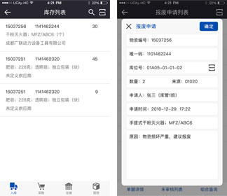

案例：成都地铁移动化物流管理系统
-
App系统主要由4种类型的界面组成，分别为：列表模式、单据（详情）模式、数据操作模式和查询模式。
(1)列表模式：主要用于多记录的显示，为整个屏幕不臃肿，不显示表头、字段标签等信息，常规均支持点击记录后进入单据（详情）模式。
(2)单据（详情）模式：主要用于单记录的显示，能将一个任务的具体情况全部加载，一般情况下均显示字段标签，多用于查询等功能。
(3)数据操作模式：主要以弹出对话框的方式进行，均设置确定或保存类的功能按钮，多用于向PMS系统间数据提交。
(4)查询模式：全程功能模块均可进行组成查询，本方案不详述组成查询的单功能，具体需查询内容，可根据用户需求随时修改。
- 